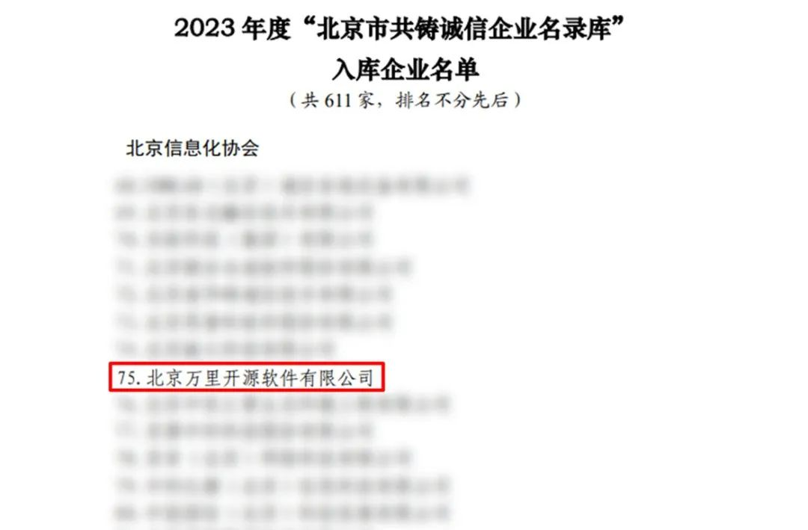
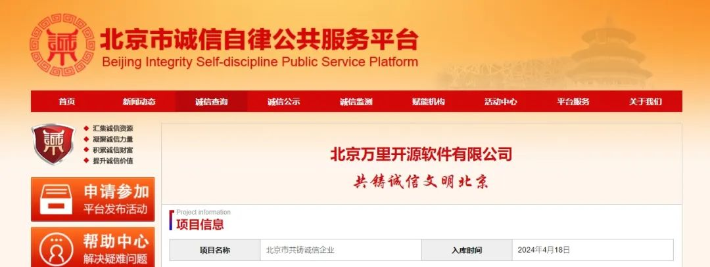

喜讯丨树立诚信典范！万里数据库荣获“北京市共铸诚信企业”称号
近日，北京市共铸诚信活动领导小组办公室发布了《“北京市共铸诚信企业名录库”入库企业名单的通知》，北京万里开源软件有限公司（以下简称“万里数据库”）通过严格的信用审查、专家审核、社会公示等程序，成功入选 “北京市共铸诚信企业名录库”，获评“北京市共铸诚信企业”荣誉称号。

“北京市共铸诚信企业名录库”是北京市共铸诚信活动领导小组办公室按照首都文明办、市经济和信息化局、市市场监管局、市商务局、市文化和旅游局、市统计局、市税务局、市工商联等部门《关于印发<“百业万企”共铸诚信文明北京活动方案>的通知》（精建办〔2022〕1号）要求，为深入推进“诚信自律行动”，引导企业公开社会信用信息，积极开展诚信承诺，经企业申报、信用审查、部门审核等程序，发布“北京市共铸诚信企业名录库”入库企业名单。

此次荣获“北京市共铸诚信企业”，是对万里数据库诚信建设成果的认可。作为国家高新技术企业、国家级专精特新“小巨人”企业，万里数据库始终践行社会责任担当，坚持合规经营，严格遵守相关法律法规，展现负责任、敢担当的良好企业形象，获得“2023北京软件和信息服务业企业社会责任治理水平”A级评定、“北京市用户满意企业”等殊荣，赢得了良好的社会信誉和业界口碑。
一直以来，万里数据库秉持“不忘DB初心 牢记万里使命”企业宗旨，专注数据库产品研发与技术创新，围绕安全数据库GreatDB打造数据库管理系统、数据迁移平台、数据库运维管理平台等一站式数据库产品与解决方案，凭借过硬的产品技术广泛服务党政军、金融、能源、运营商等各行业关键领域，为政府和企业数智化升级提供安全、可靠、高性能的数字基础设施，得到客户的好评与深度信赖。
未来，万里数据库将一如既往践行社会责任，不断提升企业核心竞争力和社会影响力，秉承诚信经营、以信为本的理念，以专业领先的数据库技术能力助力数字经济蓬勃发展，积极回馈社会，为社会创造更多价值。